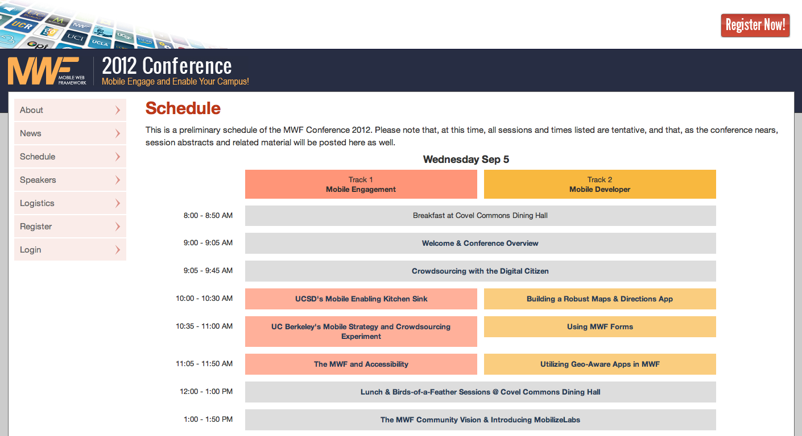

Introdution to
WebBlocks
by Eric Bollens
An Evolving Web
First we had desktop browsers
then we had mobile browsers
and now we've tablets and more...
How do we deliver our content to
every audience?
Mobile Web Apps
The Mobile Web Framework gave us...
easy to use set of mobile-tailored elements
device agnostic presentation across all devices
Other frameworks also arose suited to different use cases
But one thing they all had in common...
The focus was mobile devices
Changing Demographics
With the rise of tablets...
Do we make a third site? Or is there another option?
Fully-capable phones are now fairly pervasive
Mobile devices are used as more than mobile
How about a single site that handles all?
Responsive Design
The control which designers know in the print medium... is simply a function of the limitation of the printed page.
We should embrace the fact that the web doesn't have the same constraints, and design for this flexibility.
~ John Allsopp, A Dao of Web Design
Three Simple Ingredients
Fluid grid
Media queries
Flexible media
 |
 |
An Example in the Wild
|  |
The Benefits
Save time and money
Stay relevant to all viewers
Don't guess what the user wants
Provide a consistent experience
The Challenge
A new way of looking at the web
The responsive landscape is young
Enabling web designers with a
Responsive Web Toolkit
Where do we start?
There's a ton of good work already out there...
|
|
|
|
And so many more... |
||
Extend, don't recreate
Define a clear, standards-based set of semantics
Take advantage of existing tools where viable
Build additional functionality as needed
WebBlocks is a Toolkit
Pick and choose among supported packages
Select modules of semantic elements
Add extensions such as branding
Configure build options
Add your own sources
And compile!
How does this work?
CSS is compiled with SASS, Compass and modular pipeline
Javascript and images are optimized and assembled
Once compiled, WebBlocks assets are static
No server-side logic needed
Just CSS, Javascript and images
Cutting down the complexity
When all this flexibility isn't needed...
Point your CSS and Javascript at a hosted version
or download and deploy the assets directly in your app
And when it is...
Use the online build tools
or configure and run the compiler
or integrate it into an existing build process
But what's in the framework?
|
Responsive Design |
|
|
Support Libraries |
|
|
Rich Interfaces |
|
Live Demo of Features
Switching Costs
Zero switching costs from a supported framework
- Twitter Bootstrap currently supported
- Others in the future as needed
Achieved through adapters
WebBlocks.config[:src][:adapter] = 'bootstrap'http://ucla.github.io/WebBlocks/doc/#Configuration/Compiler/Components
http://ucla.github.io/WebBlocks/doc/#Core/Architecture/Adapter
Modularity
An extensive framework means a large footprint
Build can be compiled with subsets of elements
Achieved through modules
WebBlocks.config[:src][:modules] = []
WebBlocks.config[:src][:modules] << 'base'
WebBlocks.config[:src][:modules] << 'compatibility'
WebBlocks.config[:src][:modules] << 'entity/form'http://ucla.github.io/WebBlocks/doc/#API/Modules
http://ucla.github.io/WebBlocks/doc/#Configuration/Compiler/Components
http://ucla.github.io/WebBlocks/doc/#Core/Architecture/Module
Federation
A first class citizen in WebBlocks
Achieved through extensions
WebBlocks.config[:src][:extensions] << 'ucla'http://ucla.github.io/WebBlocks/doc/#Configuration/Compiler/Components
http://ucla.github.io/WebBlocks/doc/#Recipe/Integration/Fork
http://ucla.github.io/WebBlocks/doc/#Recipe/Integration/Submodule
Where are we today?
WebBlocks 1.0 Public Beta
Golden Master by the end of the month
but it's pretty much ready for use
What next?
WebBlocks 1.1
Improving existing interface elements
Scoping and developing new elements and libraries
Integrating additional third-party packages
Streamlining and expanding configuration options
Adding flexibility to compatibility support
Improving compiler performance
Optimizing build products
Currently in the planning phase
What next?
WebBlocks Integrations
Plone
Drupal
Build Server
Collaboration
Repository
https://github.com/ucla/WebBlocks
Documentation
http://ucla.github.io/WebBlocks/doc
Issue Tracker
https://github.com/ucla/WebBlocks/issues
Live Support
irc.freenode.net #WebBlocks
Mailing List
http://lists.ucla.edu/cgi-bin/mailman/listinfo/webblocks
THANK YOU
http://ucla.github.io/WebBlocks/doc